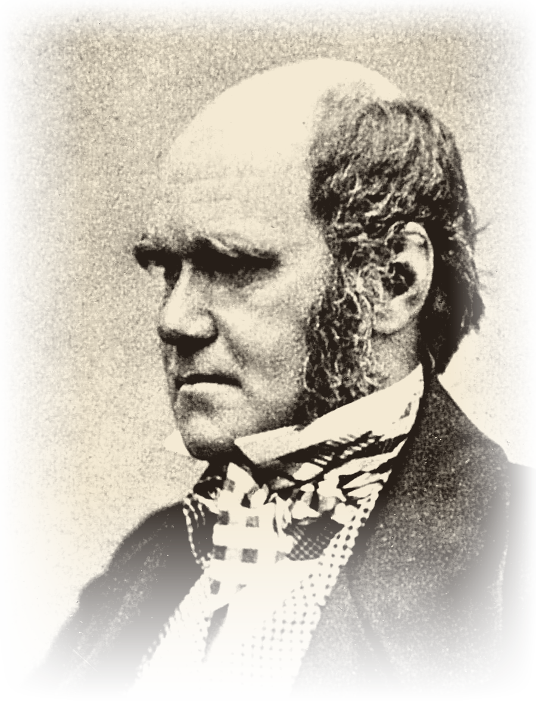

1Charles Darwin (1809–1882) was a British scientist who studied nature and animals during the Victorian era. He was born in Shrewsbury, England, and died in Kent.
2Darwin grew up in a wealthy family. His father, a doctor, hoped Charles would follow the same path, but Charles was far more drawn to nature than to his studies. At university he showed little interest in his lessons, preferring instead to explore the natural world and collect beetles and birds. Much of what he learned came not from textbooks but from his own observations and curiosity.
3Adventurous by nature, Darwin loved exploring rainforests and climbing mountains in search of new plants and animals. At the age of 22, he joined a voyage around the world that lasted five years — a journey that would go on to change the course of science.
4Through his observations during and after the voyage, Darwin developed the theory of evolution, proposing that all living things, including humans, share common ancestors. It was a radical idea for its time, offering an answer to a question that had long puzzled naturalists: how do species change over time? His theory reshaped the way people understood the natural world.
5Later in life, Darwin married his cousin Emma, and together they had children.
6Today, Darwin’s theory remains a cornerstone of modern science and is taught in schools around the world, having fundamentally changed how we understand nature.